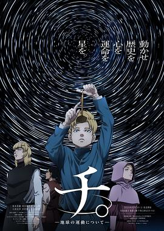

2026年1月
广播发布后不可编辑，所以每条都是那一刻的原话。
2026-01-31 11:50:36
 看过 731 ★☆☆☆☆
看过 731 ★☆☆☆☆
这是认真拍的么，AI写的剧本都比这个精彩。真的是看困我了，多好的题材，拍成这个屎样。在我看来用《三体》的团多来拍都不为过。
2026-01-31 07:20:43

国游销冠啊，得马克下
2026-01-31 07:20:04
 想玩 明末：渊虚之羽 WUCHANG: Fallen Feathers
想玩 明末：渊虚之羽 WUCHANG: Fallen Feathers
也不确定啥时候才能有时间享受魂like游戏了，先马克
2026-01-30 17:07:58
 想看 后天 / The Day After Tomorrow
想看 后天 / The Day After Tomorrow
哎，我记得这个故事也很不错，也是很久以前看的，也不知道以前看电影看完忘掉意义在哪里
2026-01-30 17:06:26
 想看 2012
想看 2012
听到了《Time for Miracles》，想起来这个很久很久在上高中的课堂上看的，模糊地记得故事很不错。既然豆瓣没有标记，以后再看一遍咯
2026-01-27 18:56:53

听音乐的时候突然想起来好像看看原本剧情应该是怎样的啊
2026-01-27 09:56:04

2026-01-27 09:55:38

2026-01-24 12:53:00
 想看 本杰明·巴顿奇事 / The Curious Case of Benjamin Button
想看 本杰明·巴顿奇事 / The Curious Case of Benjamin Button
2026-01-24 12:49:57
 看过 F1：狂飙飞车 / F1: The Movie ★★★★★
看过 F1：狂飙飞车 / F1: The Movie ★★★★★
非常精彩，畅快淋漓，很棒的F1第一视角，然后科普了很多F1的比赛规则。剧情紧凑，虽然中规中矩，但是还是很精彩的。
2026-01-21 14:37:24
 看过 时间之子 ★★★★☆
看过 时间之子 ★★★★☆
因为于奥铁男关注的，动画确实是非常的粗制滥造，运镜和动作都是《熊出没》的风格，非常混乱。剧情和故事结构很完整，值得4星。开头抛出来一个设定，后面把他们全部串起来，外加周深旁白和催泪设定，总体看下来还是不错的。希望动画团队以后可以不要拖后腿，真的是太烂了这个动画团队，连喜羊羊的都不如。
2026-01-21 14:32:58
 看过 诡才之道 / 鬼才之道 ★★★★☆
看过 诡才之道 / 鬼才之道 ★★★★☆
视角新颖，死后世界有Angel Beats、Alice in Borderland既视感。剧情也挺有意思，确实是不常见的国产片，值得上年度榜单。
2026-01-20 09:55:36
 想看 时光代理人 第一季
想看 时光代理人 第一季
2026-01-17 11:16:19
 看过 利刃出鞘3 / Wake Up Dead Man: A Knives Out Mystery ★★★★☆
看过 利刃出鞘3 / Wake Up Dead Man: A Knives Out Mystery ★★★★☆
这次竟然不是吃第一集的老本。电影前20%很多宗教的铺垫，略无聊，后面开始扑朔迷离变得有意思起来。越来越多的尸体，把剧情推向高潮，然后揭秘原因。总体来说是个不错的推理片了
2026-01-17 04:15:42

听说是我喜欢的催泪瓦斯
2026-01-12 09:07:24
 看过 刺杀小说家2 ★★★☆☆
看过 刺杀小说家2 ★★★☆☆
如果蝉线末尾能收一下就好了，现在感觉就是有点故事没讲完的感觉。另外周深还唱这个主题曲
2026-01-11 21:07:23
 看过 戏台 ★★★★☆
看过 戏台 ★★★★☆
和一般的喜剧不一样，这部剧情还是挺连贯的，内容啥的相当副词了吗
2026-01-11 06:40:32
 想读 日光流年
想读 日光流年
2026-01-10 21:52:04
 看过 喜人奇妙夜2 ★★★★★
看过 喜人奇妙夜2 ★★★★★
我眼光还行啊。这一季挺精彩的，很多让人眼前一亮的作品，总共9个月的录制，很厉害。 //看了两期，感觉这次杨雨光要成最佳助演了
2026-01-10 08:04:31

2026-01-02 09:07:28
 看过 最后一席话：珍·古道尔博士 / Famous Last Words: Dr. Jane Goodall ★★★☆☆
看过 最后一席话：珍·古道尔博士 / Famous Last Words: Dr. Jane Goodall ★★★☆☆
被豆瓣年度榜单推荐，看完感觉有些过誉了。总体来说就是她认为目前的世界很dark了，但是我们依然要抱有希望，依然值得把孩子带来这个世界，我们可以make our own difference to the Mother Nature。看了下澳大利亚也有Roots & Shoots的活动，他们做的事情看起来确实很有意义，如果能规模化确实可以让大自然更加"自然"（我也不确定是不是会更好），但是很显然规模化还是有很大难度，需要发达国家的政策支持，需要发展中国家后续的跟进。路途还很漫长，但是我觉得至少在发达国家人与自然已经可以很和谐地相处了～可能这其中也有她的一份力量吧，rip
2026-01-01 16:13:40

2026-01-01 16:12:53
 想看 复仇者联盟5：毁灭之日 / Avengers: Doomsday
想看 复仇者联盟5：毁灭之日 / Avengers: Doomsday
2026-01-01 16:12:24
 想看 勇敢者游戏3：开放世界 / Jumanji: Open World
想看 勇敢者游戏3：开放世界 / Jumanji: Open World
2026-01-01 16:11:58
 想看 饥饿游戏：收获日出 / The Hunger Games: Sunrise on the Reaping
想看 饥饿游戏：收获日出 / The Hunger Games: Sunrise on the Reaping
2026-01-01 16:08:29
 想看 挖掘者 / Digger
想看 挖掘者 / Digger
2026-01-01 16:07:49

2026-01-01 16:06:34
 想看 如何干一票大的 / How to Rob a Bank
想看 如何干一票大的 / How to Rob a Bank
2026-01-01 16:06:05

2026-01-01 16:05:17
 想看 逃出绝命街 / The End of Oak Street
想看 逃出绝命街 / The End of Oak Street
2026-01-01 16:03:35
 想看 蜘蛛侠：崭新之日 / Spider-Man: Brand New Day
想看 蜘蛛侠：崭新之日 / Spider-Man: Brand New Day
2026-01-01 16:02:25
想看
最后一部真人版 看看咋样
2026-01-01 15:59:40

2026-01-01 15:58:32

2026-01-01 15:57:34
 想看 星球大战：曼达洛人与古古 / Star Wars: The Mandalorian & Grogu
想看 星球大战：曼达洛人与古古 / Star Wars: The Mandalorian & Grogu
2026-01-01 15:55:43
 想看 巅峰猎杀 / Apex
想看 巅峰猎杀 / Apex
2026-01-01 15:54:25
 想看 木乃伊 / Lee Cronin’s The Mummy
想看 木乃伊 / Lee Cronin’s The Mummy
2026-01-01 15:29:45

2026-01-01 15:29:04

2026-01-01 15:27:40

2026-01-01 15:26:13

2026-01-01 15:25:11
 想看 极限审判 / Mercy
想看 极限审判 / Mercy
2026-01-01 15:23:48